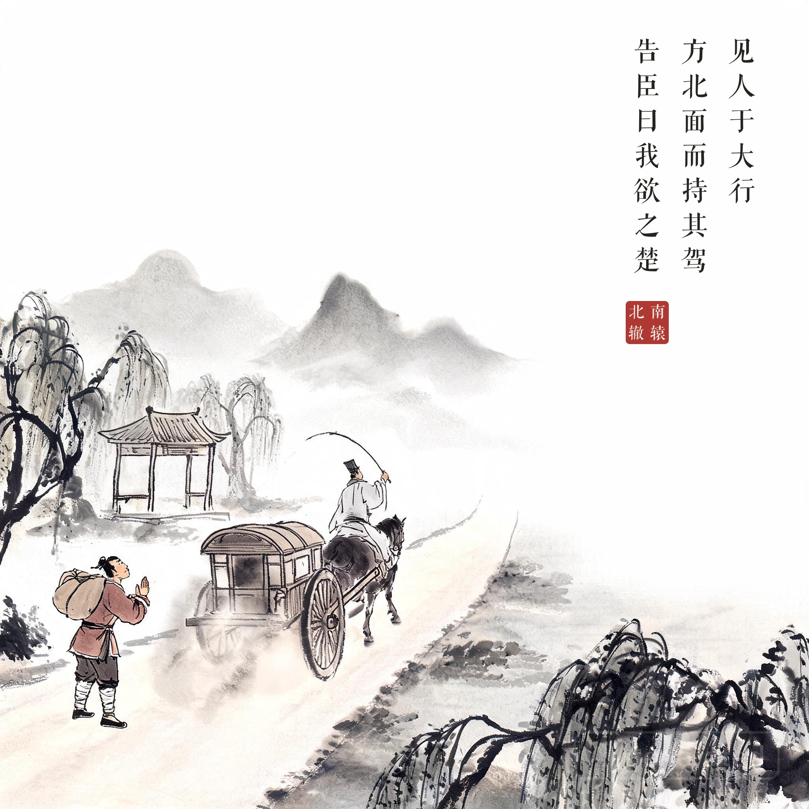
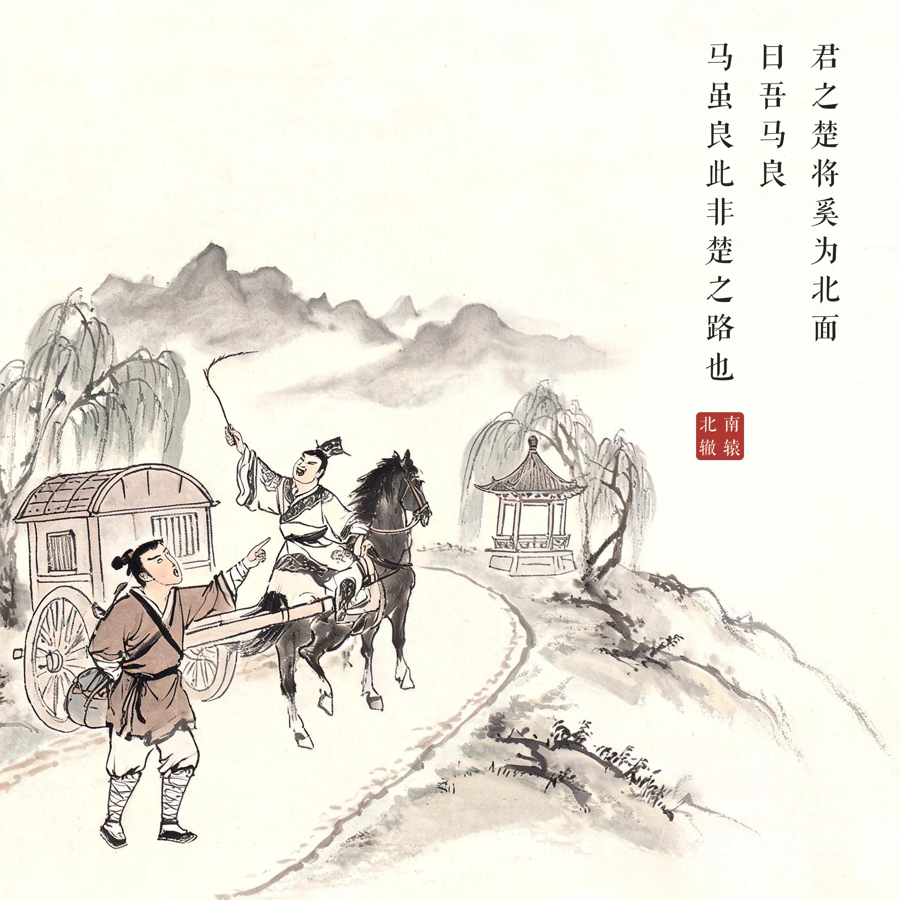
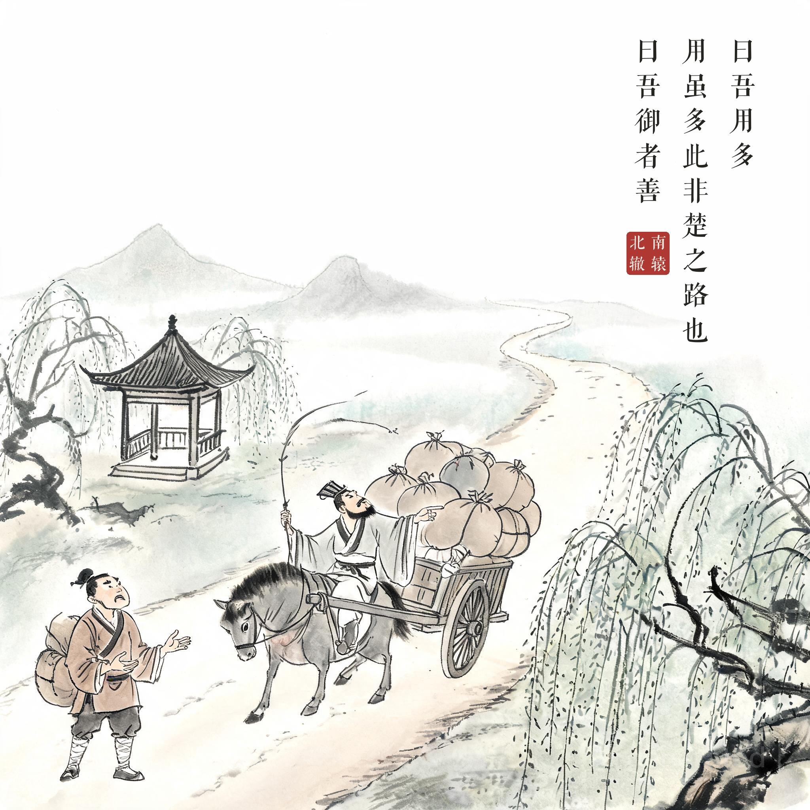
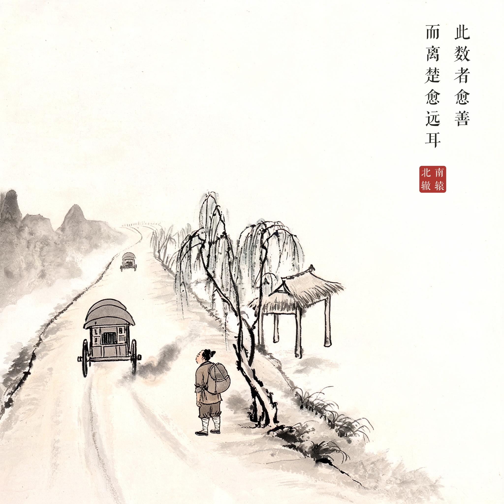

成语故事 · 水墨组画
10 南辕北辙
系列：成语故事 · 水墨组画 | 画幅：2K（2048×2048）| 模型：aicloud-seedream / 依据原文拆为 4 幅独立的画，每幅右上角竖排合成该幕原文题款（方正清刻本悦宋，无标点），钤朱红印章"南辕北辙"，画文互证。

其01 · 欲之楚见人于大行 / 方北面而持其驾 / 告臣曰我欲之楚
华服驭客驱车北行，褐衣行者道旁拦问

其02 · 吾马良君之楚将奚为北面 / 曰吾马良 / 马虽良此非楚之路也
驭客停车拍马自夸，行者指北质疑

其03 · 吾用多曰吾用多 / 用虽多此非楚之路也 / 曰吾御者善
驭客指向鼓鼓行囊，行者摇头摊手再劝

其04 · 离楚愈远此数者愈善 / 而离楚愈远耳
马车向北扬尘渐远，行者望影摇头，南面远山背道
原文
今者臣来，见人于大行，方北面而持其驾，告臣曰：我欲之楚。臣曰：君之楚，将奚为北面。曰：吾马良。臣曰：马虽良，此非楚之路也。曰：吾用多。臣曰：用虽多，此非楚之路也。曰：吾御者善。此数者愈善，而离楚愈远耳。
注释
- 辕：车前驾牲口的长木；辙：车轮碾出的痕迹——车头朝南、车辙向北，故曰南辕北辙
- 大行（háng）：大路；之：前往
- 用：盘缠、路费；御者：车夫
白话译文
（季梁对魏王说）我这次来的时候，看见有人在大道上驾着车朝北走，他告诉我说："我要去楚国。"我说："您去楚国，为什么朝北走？"他说："我的马好。"我说："马再好，这也不是去楚国的路啊。"他说："我的盘缠多。"我说："盘缠再多，这也不是去楚国的路啊。"他又说："我的车夫赶车的本领高。"——这几样越好，只会离楚国越远罢了。
寓意
方向错了，条件越优越、行动越卖力，离目标反而越远；做事先要认准方向。